Performance / Composition Synthesizer · Version 3.0
Section 3 — MIDI Control Page Parameters
These parameters set instrument wide MIDI parameters, such as the Base Channel number and MIDI Reception mode, and control what types of MIDI messages are received and transmitted. The settings of these parameters will remain in effect at all times and are preserved while the power is off. This section also offers an introduction and overview of General MIDI, and explains how to use it with the TS‑10.
Whether you are simply linking two keyboards together, playing a synth from a guitar controller, or driving a rack of samplers from the TS‑10, MIDI makes it all possible.
The MIDI Control Page has three sub-pages.
- Press the MIDI Control button. This takes you to the top level MIDI Control page:

BASE-CHANRange: 01 to 16
Selects the Base Channel on which the TS‑10 transmits and receives MIDI messages. System Exclusive messages are always sent and received on the base channel.
Any of 16 MIDI channels may be selected as the basic MIDI channel of the TS‑10. The effect of setting the base channel varies depending on the MIDI Mode and whether data is being sent or received.
| Transmit | The TS‑10 will transmit only on the Base Channel, and will ignore the channel assignments contained in the tracks. When Presets are selected, they will transmit the MIDI Program Change for the Preset, and not the Program Change values for the three Tracks. |
| Receive | In Poly mode — keys, controllers, and program changes are only recognized if received on the base channel. In Mono A mode, program changes are received only on the base channel. The base channel is also used in both Mono modes as the first channel of the 12 channel range. |
GMIDIRange: OFF or ON
This is used to enter General MIDI mode. The TS‑10 completely conforms to the full General MIDI Specification. This allows you to play back any General MIDI-based sequence via incoming MIDI and always get predictable results. The General MIDI Sounds in ROM (listed later) are also provided on the in-box disk (TSD-300) that came with your TS‑10.
For a complete description of this mode, see Section 12 — Sequencing/MIDI Applications.
SENDRange: BASE or TRACK
Controls the MIDI channel on which the TS‑10 will transmit performance information such as key and controller events, as well as program changes.
- BASE — The TS‑10 will transmit only on the Base Channel, and will ignore the channel assignments contained in the tracks. When Presets are selected, they will transmit the MIDI Program Change for the Preset, and not the Program Change values for the three Tracks.
- TRACK — The settings on the Track MIDI page determine the MIDI transmission channel.
The TS‑10 will transmit on the channel(s) assigned to the track(s) being played, either from the keyboard or the sequencer, depending on the Track MIDI Status (i.e. nothing will be sent if a track is assigned to the ----/RECV or MIDI-OFF status). Each track can have its own MIDI channel.
MODERange: OMNI, POLY, MULTI, MONO-A, or MONO-B
This parameter determines how MIDI information will be received by the TS‑10. MODE has no effect on what MIDI information is transmitted.
There are five MIDI modes implemented in the TS‑10:
- OMNI — In this mode, the TS‑10 will receive on any or all of the 16 MIDI channels. This mode is useful when you are only using a few instruments, and you are not concerned with setting up different channels for each device.
- POLY — In this mode, the TS‑10 will receive only on the Base MIDI channel. MIDI information on all other channels will be ignored.
- MULTI — An ENSONIQ innovation, MULTI mode is the key to unlocking the potential of the TS‑10 as a multi-timbral receiver from an external MIDI sequencer. In MULTI mode, the 12 Tracks of the current song or sequence can receive MIDI information independently and polyphonically on up to 12 different MIDI channels. The Preset Tracks will not receive incoming MIDI in MULTI mode.
In MULTI mode, different MIDI channels must be selected for each Sequence Track that you want to receive via MIDI. This can be accomplished on the Track MIDI page. If more than one Sequence Track is set to the same MIDI channel, only the lowest numbered track will receive via MIDI.
In MULTI mode, independent of what tracks are stacked or selected on the front panel, the sounds you hear will depend entirely on what MIDI channel(s) the MIDI data is received on.
About Mono Mode
Mono mode is particularly useful for driving the TS‑10 from a guitar controller, or any other application where having up to twelve independent, monophonic channels is desirable. The TS‑10 offers two types of Mono mode operation. In both types, the TS‑10 will receive monophonically on twelve consecutive MIDI channels (the Base channel through Base channel +11). The difference has to do with how those MIDI channels are routed within the TS‑10.
- MONO-A — This is another ENSONIQ development intended to make using multi-channel controllers like guitars easier. All notes and controllers received via MIDI will play whatever sounds are selected or stacked on the front panel, just as if the notes were played from the keyboard. You have the advantage of multiple tracks which will respond independently to controllers received on multiple channels, but you do not have to set up the sounds for each track separately.
- MONO-B — This is the more conventional type of Mono mode. It allows you to set up each track of the current song or sequence as a monophonic synthesizer. Each track can have a different sound assigned to it. This is how you get a different sound on each string when using a MIDI guitar controller.
Global Controllers in Mono Mode
Global controllers are controllers sent on one channel that affect all other channels simultaneously.
They can be useful in reducing the number of MIDI events required to achieve particular effects, and can thereby reduce the delays sometimes associated with overloading MIDI. Some guitar controllers can transmit global controllers, and the TS‑10 can respond to them.
In Mono mode (MONO-A or MONO-B) the base channel minus one becomes the MIDI channel for global controllers (pitch bend, pressure, etc.). For example, if the base channel is channel 3, any controllers received on channel 2 will be interpreted as global controllers and will affect all voices being played. If the base channel is channel 1, channel 16 becomes the channel for global controllers. Each track will also respond independently to controllers sent on its own channel. For example, each guitar string on a MIDI guitar can send independent pitch bend, while the “whammy bar” controller could be sent on the global channel to affect all voices.
VELS/XPOS — MIDI Transpose EnableRange: SEND, RECV, or BOTH
Controls whether track transpose will affect the transmission/reception of MIDI key numbers, giving you more control over how the Track Parameter TRANSPOSE function will affect notes played on a track.
XPOS also controls how the Track VELS setting will affect MIDI transmission/reception of velocity, in accordance with the same rules that govern the Track TRANSPOSE parameter.
- SEND — Will transmit the transposed key numbers of a track, but notes received via incoming MIDI will not be transposed. This setting is useful for sending transposed key numbers to an external MIDI device, without affecting the pitch of notes received via incoming MIDI.
- RECV — The key number transmitted by the TS‑10 will always be the same key that was actually played on the TS‑10 keyboard, but notes received via incoming MIDI will be transposed. In this mode, the TS‑10 will respond properly when transposed data sent to an external sequencer is transmitted back to the TS‑10.
- BOTH — Will transmit and receive the transposed key numbers of a track. Useful for sending transposed key numbers to an external MIDI device, while also affecting the pitch of notes received via incoming MIDI.
| Setting | Local Voices Affected | MIDI Reception Affected | MIDI Transmission Affected |
|---|---|---|---|
| SEND | Yes | No | Yes |
| RECV | Yes | Yes | No |
| BOTH | Yes | Yes | Yes |
XCTRL - External ControllerRange: 000 to 127
Use XCTRL to assign an external MIDI Controller number to be both transmitted and received by the TS‑10. The number that is assigned here will be used as the MIDI Controller number that the XCTRL Track parameter will transmit on.
Most controllers on a synthesizer—mod wheel, channel pressure, or breath controller for example—have a MIDI controller number associated with them: this parameter can be set to match the MIDI Controller number of any controller in your rig. Doing so will make a particular external controller available as a modulator in any of your sounds.
One of the modulation sources that can be selected in the programming section is XCTRL. The value of the XCTRL parameter is a MIDI controller number, ranging from 000 to 127. When the Track XCTRL value is edited, parameters that have XCTRL assigned as a mod source will be modulated, and the TS‑10 will transmit the edited value(s) on the MIDI Controller number assigned to this parameter. When the TS‑10 receives MIDI Controller messages corresponding to this controller number, they will be routed to all parameters that have been programmed with XCTRL as a modulation source.
Suppose for example, you are playing the TS‑10 from a keyboard with a breath controller (or want to use a breath controller as a modulator when playing the TS‑10 keyboard). You can set up a program on the TS‑10 in which the filter cutoff frequency is modulated by XCTRL. If you then set XCTRL=02, the breath controller will now be able to modulate the filter, or whatever else has its modulation source set to XCTRL, in the program you have created.
The following controller numbers are commonly supported:
| Number | Controller | Number | Controller |
| 1 | Modulation Wheel | 64 | Sustain |
| 2 | Breath Controller | 66 | Sostenuto |
| 4 | Foot Pedal | 70 | Sound Variation (Patch Selects) |
| 6 | Data Entry MSB | 71 | Harmonic Content (Timbre) |
| 7 | Volume | 72 | Release Time |
| 10 | Pan | 73 | Attack Time |
| 12 | Effect Modulation | 74 | Brightness |
- Press MIDI Control again. The display shows the second sub-page:

LOOPRange: OFF or ON
The MIDI LOOP parameter controls how volume information is handled when a track’s status is set to LOCAL-OFF or MIDI-LOOP. It controls whether or not the Track MIX parameter, as adjusted in the Track Parameter section, will transmit via MIDI. It only affects tracks that have their MIDI status set to LOCAL-OFF or MIDI-LOOP. It is normally OFF, but in a MIDI loop setup, it should be ON.
- OFF — This is the default setting. When changes are made to the Track MIX parameter (on tracks with STATUS=LOCAL-OFF or MIDI-LOOP), or when the volume pedal is moved, the TS‑10 will transmit MIDI volume (controller 7) messages that combine the Track MIX setting with the current setting of the volume pedal.
- ON — The TS‑10 will not transmit changes made to the Track MIX parameter on tracks with STATUS=LOCAL-OFF or MIDI-LOOP. Volume pedal changes will be transmitted directly and are unaffected by the MIX setting.
When LOOP=OFF, then the MIX parameter is combined (multiplied) with the volume pedal setting to create a composite volume, which is then transmitted to external sound modules as MIDI controller 7. In a MIDI loop situation with a computer, this is undesirable, because lowering the MIX value will send controller messages that are indistinguishable from volume pedal messages. When this information is echoed by the computer, the TS‑10 receives it as volume pedal, lowering the volume on that track even further. Eventually this causes the volume to spiral down to zero, which in turn causes the track to be silenced, even though the displayed volume setting is greater than zero. Setting LOOP=ON will prevent this problem from occurring.
Note that the volume pedal is only active if PEDAL=VOL on the System page, and that volume pedal changes will always be transmitted as MIDI volume (controller 7).
Working with MIDI Loops
With a MIDI loop setup, the MIDI Out of the TS‑10 is either directly or indirectly (through an external device such as a computer) connected to the MIDI In of the TS‑10. The MIDI-LOOP Track STATUS is optimized for use in a MIDI loop in which the TS‑10 will play back into itself.
Do not use the SEND/RECV Track STATUS setting with a MIDI loop present. To connect a TS‑10 track to a computer sequencer, the MIDI-LOOP setting should be used. In this type of setup, a computer in MIDI Thru mode forms a loop which echoes the MIDI information back into the TS‑10. See Section 5 — Preset/Track Parameters for more information about the Track MIDI STATUS parameter. See Section 0 — Understanding the Sequencer for information on recording into the TS‑10 sequencer in a MIDI loop.
Using Presets with MIDI Loops
CNTRLS — ControllersRange: OFF or ON
This switch controls whether or not the TS‑10 will transmit and receive MIDI controllers — pitch bend, mod wheel, pressure, volume, sustain pedal, etc.
SONG-SEL — Song SelectRange: OFF or ON
This determines whether the TS‑10 will send and receive MIDI Song Select messages.
- OFF — The TS‑10 will not transmit MIDI Song Select messages, and will ignore incoming Song Select messages received via MIDI.
- ON — Incoming Song Selects will select the corresponding TS‑10 sequencer location.
Incoming MIDI Song Selects # 00-59 will select TS‑10 Sequencer locations # 00-59. Selecting Sequencer locations # 00-59 will always cause the TS‑10 to transmit MIDI Song selects # 00-59.
ALL-OFFRange: OFF or ON
The All Notes Off message enable switch controls how the system will react to MIDI messages received on any MIDI channel.
- OFF — The TS‑10 will ignore any All Notes Off messages that are received.
- ON — The TS‑10 will shut down all currently sounding internal voices unless the MODE parameter is set to OMNI, in which case the message is ignored.
START/STOPRange: OFF or ON
This parameter determines whether pressing the Play and Stop/Continue buttons will transmit MIDI , and messages from the TS‑10 MIDI Out port. The TS‑10 will always receive Play Stop, and Continue messages via MIDI, regardless of the setting of this parameter, if CLOCK=MIDI on the Sequencer Control page. Some older drum machines have no way of disabling reception of these messages, and will always start playing their internal patterns when they receive a Start message. Set this parameter to OFF when you want to use such a drum machine simply as a voice module, played from a TS‑10 sequencer track, without starting its internal sequencer playing each time you press the Play button on the TS‑10.
- ON — When you press the Play or Stop/Continue buttons to start, stop or continue the TS‑10 sequencer, a corresponding MIDI , or message will be sent.
- OFF — When you press the Play or Stop/Continue buttons to start, stop or continue the TS‑10 sequencer, a MIDI , or message will not be sent.
PROG-CHG — Program ChangesRange: OFF or ON
This switch controls how the TS‑10 handles transmission and reception of MIDI program change messages.
- OFF—the TS‑10 will not transmit or receive MIDI program changes.
- ON—the TS‑10 will transmit and receive program changes over MIDI.
- NEW—the TS‑10 will transmit program changes only if they are different than the previous program change sent out on the particular channel. Program changes will be received normally.
Refer to the Track MIDI parameter description in Section 5 — Preset/Track Parameters and Section 10 — Understanding the Sequencer for more information on how program changes are handled.
Receiving MIDI Program Changes
The way in which the TS‑10 receives program changes is slightly more complex than some other systems, because of the large number of programs and presets that are available to be selected from MIDI program changes. The following chart shows how the TS‑10 receives MIDI program changes:
In OMNI, POLY and MONO-A modes (puts unit into Sounds/Presets mode):
| When… | Incoming MIDI Program Changes… | Will Select… |
|---|---|---|
| BankSet U0 is selected | 00-59 | User RAM Programs 00-59 |
| BankSet U1 is selected | 00-59 | User RAM Programs 00-59 |
| BankSet R2 is selected | 00-59 | ROM Programs 00-59 |
| BankSet R3 is selected | 00-59 | ROM Programs 00-59 |
| BankSet R4 is selected | 00-59 | ROM Programs 00-59 |
| BankSet S8 is selected | 0-9 | Sampled Sounds 0-9 |
| BankSet S9 is selected | 0-9 | Sampled Sounds 0-9 |
| BankSet U0 is selected | 60-119 | User RAM Presets 00-59 |
In MULTI and MONO-B modes (received on Seq/Song Tracks only):
| When… | Incoming MIDI Program Changes… | Will Select… |
|---|---|---|
| Track BANK=000 (BankSet U0) | 00-59 | (without FX) User RAM Programs 00-59 |
| Track BANK=001 (BankSet U1) | 00-59 | (without FX) User RAM Programs 00-59 |
| Track BANK=002 (BankSet R2) | 00-59 | (without FX) ROM Programs 00-59 |
| Track BANK=003 (BankSet R3) | 00-59 | (without FX) ROM Programs 00-59 |
| Track BANK=004 (BankSet R4) | 00-59 | (without FX) ROM Programs 00-59 |
| Track BANK=008 (BankSet S8) | 0-9 | (without FX) Sampled Sounds 0-9 |
| Track BANK=009 (BankSet S9) | 0-9 | (without FX) Sampled Sounds 0-9 |
| Track BANK=000 (BankSet U0) | 60-119 | (with FX) User RAM Programs 00-59 |
| Track BANK=001 (BankSet U1) | 60-119 | (with FX) User RAM Programs 00-59 |
| Track BANK=002 (BankSet R2) | 60-119 | (with FX) ROM Programs 00-59 |
| Track BANK=003 (BankSet R3) | 60-119 | (with FX) ROM Programs 00-59 |
| Track BANK=004 (BankSet R4) | 60-119 | (with FX) ROM Programs 00-59 |
| Track BANK=008 (BankSet S8) | 60-69 | (with FX) Sampled Sounds 0-9 |
| Track BANK=009 (BankSet S9) | 60-69 | (with FX) Sampled Sounds 0-9 |
Selecting a New Sequence or Song Effect from MIDI Program Changes
As indicated in the above chart, in MULTI and MONO-B modes, adding 60 to the MIDI Program Change number for the desired sound will select the new sound and also install the effect from that sound into the sequence (or song) effect. This can be useful when controlling the TS‑10 from an external sequencer. Note that changing the effect will briefly silence the audio output and will cut off any sounding voices if VOICE-MUTING=ON on the System page.
- Press MIDI Control again. The display shows the third sub-page:

SYS-EXRange: OFF, ON, or OLD
This switch determines whether the TS‑10 is able to receive incoming MIDI messages:
- When SYS-EX=OFF, the TS‑10 is not able to receive any MIDI System Exclusive messages.
- When SYS-EX=ON, the TS‑10 will receive MIDI System Exclusive messages in the post-2.0 SYS-EX data format.
- When SYS-EX=OLD, the TS‑10 will receive MIDI System Exclusive messages in both the pre- 2.0 SYS-EX data format, and the post-2.0 SYS-EX data format. The OLD setting allows data saved from pre-2.0 software to be loaded into the TS‑10.
The Sys-Ex messages that are sent from the Storage, Sys-Ex, Send Dump pages can always be transmitted regardless of the setting of this switch. (Refer to the Appendix for more information about the TS‑10’s Sys-Ex implementation).
DEVICE-IDRange: 01 to 16
Allows Remote MIDI Devices to address the TS‑10 via incoming MIDI Sys-Ex without changing the base channel number. Think of this parameter as a higher level of identification. This is also used to identify Sys-Ex messages transmitted by the TS‑10.
SEND-PARAMSRange: OFF or ON
When SEND-PARAMS=ON, the TS‑10 allows the transmission of parameter values via Sys-Ex messages. When OFF, there is no transmission of parameter values. For example, if you are editing a sound, set this parameter to OFF, to prevent a stream of MIDI Sys-Ex information from flowing between the TS‑10 and any connected Remote MIDI Devices.